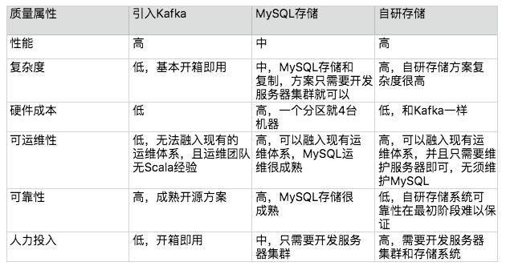

12 | 架构设计流程：评估和选择备选方案
上一期我讲了设计备选方案，在完成备选方案设计后，如何挑选出最终的方案也是一个很大的挑战，主要原因有：
- 每个方案都是可行的，如果方案不可行就根本不应该作为备选方案。
- 没有哪个方案是完美的。例如，A 方案有性能的缺点，B 方案有成本的缺点，C 方案有新技术不成熟的风险。
- 评价标准主观性比较强，比如设计师说 A 方案比 B 方案复杂，但另外一个设计师可能会认为差不多，因为比较难将“复杂”一词进行量化。因此，方案评审的时候我们经常会遇到几个设计师针对某个方案或者某个技术点争论得面红耳赤。
正因为选择备选方案存在这些困难，所以实践中很多设计师或者架构师就采取了下面几种指导思想：
- 最简派
设计师挑选一个看起来最简单的方案。例如，我们要做全文搜索功能，方案 1 基于 MySQL，方案 2 基于 Elasticsearch。MySQL 的查询功能比较简单，而 Elasticsearch 的倒排索引设计要复杂得多，写入数据到 Elasticsearch，要设计 Elasticsearch 的索引，要设计 Elasticsearch 的分布式……全套下来复杂度很高，所以干脆就挑选 MySQL 来做吧。
- 最牛派
最牛派的做法和最简派正好相反，设计师会倾向于挑选技术上看起来最牛的方案。例如，性能最高的、可用性最好的、功能最强大的，或者淘宝用的、微信开源的、Google 出品的等。
我们以缓存方案中的 Memcache 和 Redis 为例，假如我们要挑选一个搭配 MySQL 使用的缓存，Memcache 是纯内存缓存，支持基于一致性 hash 的集群；而 Redis 同时支持持久化、支持数据字典、支持主备、支持集群，看起来比 Memcache 好很多啊，所以就选 Redis 好了。
- 最熟派
设计师基于自己的过往经验，挑选自己最熟悉的方案。我以编程语言为例，假如设计师曾经是一个 C++ 经验丰富的开发人员，现在要设计一个运维管理系统，由于对 Python 或者 Ruby on Rails 不熟悉，因此继续选择 C++ 来做运维管理系统。
- 领导派
领导派就更加聪明了，列出备选方案，设计师自己拿捏不定，然后就让领导来定夺，反正最后方案选的对那是领导厉害，方案选的不对怎么办？那也是领导“背锅”。
其实这些不同的做法本身并不存在绝对的正确或者绝对的错误，关键是不同的场景应该采取不同的方式。也就是说，有时候我们要挑选最简单的方案，有时候要挑选最优秀的方案，有时候要挑选最熟悉的方案，甚至有时候真的要领导拍板。因此关键问题是：这里的“有时候”到底应该怎么判断？今天我就来讲讲架构设计流程的第 3 步：评估和选择备选方案。
架构设计第 3 步：评估和选择备选方案
前面提到了那么多指导思想，真正应该选择哪种方法来评估和选择备选方案呢？我的答案就是“360 度环评”！具体的操作方式为：列出我们需要关注的质量属性点，然后分别从这些质量属性的维度去评估每个方案，再综合挑选适合当时情况的最优方案。
常见的方案质量属性点有：性能、可用性、硬件成本、项目投入、复杂度、安全性、可扩展性等。在评估这些质量属性时，需要遵循架构设计原则 1“合适原则”和原则 2“简单原则”，避免贪大求全，基本上某个质量属性能够满足一定时期内业务发展就可以了。
假如我们做一个购物网站，现在的 TPS 是 1000，如果我们预期 1 年内能够发展到 TPS 2000（业务一年翻倍已经是很好的情况了），在评估方案的性能时，只要能超过 2000 的都是合适的方案，而不是说淘宝的网站 TPS 是每秒 10 万，我们的购物网站就要按照淘宝的标准也实现 TPS 10 万。
有的设计师会有这样的担心：如果我们运气真的很好，业务直接一年翻了 10 倍，TPS 从 1000 上升到 10000，那岂不是按照 TPS 2000 做的方案不合适了，又要重新做方案？
这种情况确实有可能存在，但概率很小，如果每次做方案都考虑这种小概率事件，我们的方案会出现过度设计，导致投入浪费。考虑这个问题的时候，需要遵循架构设计原则 3“演化原则”，避免过度设计、一步到位的想法。按照原则 3 的思想，即使真的出现这种情况，那就算是重新做方案，代价也是可以接受的，因为业务如此迅猛发展，钱和人都不是问题。例如，淘宝和微信的发展历程中，有过多次这样大规模重构系统的经历。
通常情况下，如果某个质量属性评估和业务发展有关系（例如，性能、硬件成本等），需要评估未来业务发展的规模时，一种简单的方式是将当前的业务规模乘以 2 ~4 即可，如果现在的基数较低，可以乘以 4；如果现在基数较高，可以乘以 2。例如，现在的 TPS 是 1000，则按照 TPS 4000 来设计方案；如果现在 TPS 是 10000，则按照 TPS 20000 来设计方案。
当然，最理想的情况是设计一个方案，能够简单地扩容就能够跟上业务的发展。例如，我们设计一个方案，TPS 2000 的时候只要 2 台机器，TPS 20000 的时候只需要简单地将机器扩展到 20 台即可。但现实往往没那么理想，因为量变会引起质变，具体哪些地方质变，是很难提前很长时间能预判到的。举一个最简单的例子：一个开发团队 5 个人开发了一套系统，能够从 TPS 2000 平滑扩容到 TPS 20000，但是当业务规模真的达到 TPS 20000 的时候，团队规模已经扩大到了 20 个人，此时系统发生了两个质变：
- 首先是团队规模扩大，20 个人的团队在同一个系统上开发，开发效率变将很低，系统迭代速度很慢，经常出现某个功能开发完了要等另外的功能开发完成才能一起测试上线，此时如果要解决问题，就需要将系统拆分为更多子系统。
- 其次是原来单机房的集群设计不满足业务需求了，需要升级为异地多活的架构。
如果团队一开始就预测到这两个问题，系统架构提前就拆分为多个子系统并且支持异地多活呢？这种“事后诸葛亮”也是不行的，因为最开始的时候团队只有 5 个人，5 个人在有限的时间内要完成后来 20 个人才能完成的高性能、异地多活、可扩展的架构，项目时间会遥遥无期，业务很难等待那么长的时间。
完成方案的 360 度环评后，我们可以基于评估结果整理出 360 度环评表，一目了然地看到各个方案的优劣点。但是 360 度环评表也只能帮助我们分析各个备选方案，还是没有告诉我们具体选哪个方案，原因就在于没有哪个方案是完美的，极少出现某个方案在所有对比维度上都是最优的。例如：引入开源方案工作量小，但是可运维性和可扩展性差；自研工作量大，但是可运维和可维护性好；使用 C 语言开发性能高，但是目前团队 C 语言技术积累少；使用 Java 技术积累多，但是性能没有 C 语言开发高，成本会高一些……诸如此类。
面临这种选择上的困难，有几种看似正确但实际错误的做法。
- 数量对比法：简单地看哪个方案的优点多就选哪个。例如，总共 5 个质量属性的对比，其中 A 方案占优的有 3 个，B 方案占优的有 2 个，所以就挑选 A 方案。
这种方案主要的问题在于把所有质量属性的重要性等同，而没有考虑质量属性的优先级。例如，对于 BAT 这类公司来说，方案的成本都不是问题，可用性和可扩展性比成本要更重要得多；但对于创业公司来说，成本可能就会变得很重要。
其次，有时候会出现两个方案的优点数量是一样的情况。例如，我们对比 6 个质量属性，很可能出现两个方案各有 3 个优点，这种情况下也没法选；如果为了数量上的不对称，强行再增加一个质量属性进行对比，这个最后增加的不重要的属性反而成了影响方案选择的关键因素，这又犯了没有区分质量属性的优先级的问题。
- 加权法：每个质量属性给一个权重。例如，性能的权重高中低分别得 10 分、5 分、3 分，成本权重高中低分别是 5 分、3 分、1 分，然后将每个方案的权重得分加起来，最后看哪个方案的权重得分最高就选哪个。
这种方案主要的问题是无法客观地给出每个质量属性的权重得分。例如，性能权重得分为何是 10 分、5 分、3 分，而不是 5 分、3 分、1 分，或者是 100 分、80 分、60 分？这个分数是很难确定的，没有明确的标准，甚至会出现为了选某个方案，设计师故意将某些权重分值调高而降低另外一些权重分值，最后方案的选择就变成了一个数字游戏了。
正确的做法是按优先级选择，即架构师综合当前的业务发展情况、团队人员规模和技能、业务发展预测等因素，将质量属性按照优先级排序，首先挑选满足第一优先级的，如果方案都满足，那就再看第二优先级……以此类推。那会不会出现两个或者多个方案，每个质量属性的优缺点都一样的情况呢？理论上是可能的，但实际上是不可能的。前面我提到，在做备选方案设计时，不同的备选方案之间的差异要比较明显，差异明显的备选方案不可能所有的优缺点都是一样的。
评估和选择备选方案实战
再回到我们设计的场景“前浪微博”。针对上期提出的 3 个备选方案，架构师组织了备选方案评审会议，参加的人有研发、测试、运维、还有几个核心业务的主管。
\1. 备选方案 1：采用开源 Kafka 方案
- 业务主管倾向于采用 Kafka 方案，因为 Kafka 已经比较成熟，各个业务团队或多或少都了解过 Kafka。
- 中间件团队部分研发人员也支持使用 Kafka，因为使用 Kafka 能节省大量的开发投入；但部分人员认为 Kafka 可能并不适合我们的业务场景，因为 Kafka 的设计目的是为了支撑大容量的日志消息传输，而我们的消息队列是为了业务数据的可靠传输。
- 运维代表提出了强烈的反对意见：首先，Kafka 是 Scala 语言编写的，运维团队没有维护 Scala 语言开发的系统的经验，出问题后很难快速处理；其次，目前运维团队已经有一套成熟的运维体系，包括部署、监控、应急等，使用 Kafka 无法融入这套体系，需要单独投入运维人力。
- 测试代表也倾向于引入 Kafka，因为 Kafka 比较成熟，无须太多测试投入。
\2. 备选方案 2：集群 + MySQL 存储
- 中间件团队的研发人员认为这个方案比较简单，但部分研发人员对于这个方案的性能持怀疑态度，毕竟使用 MySQL 来存储消息数据，性能肯定不如使用文件系统；并且有的研发人员担心做这样的方案是否会影响中间件团队的技术声誉，毕竟用 MySQL 来做消息队列，看起来比较“土”、比较另类。
- 运维代表赞同这个方案，因为这个方案可以融入到现有的运维体系中，而且使用 MySQL 存储数据，可靠性有保证，运维团队也有丰富的 MySQL 运维经验；但运维团队认为这个方案的成本比较高，一个数据分组就需要 4 台机器（2 台服务器 + 2 台数据库）。
- 测试代表认为这个方案测试人力投入较大，包括功能测试、性能测试、可靠性测试等都需要大量地投入人力。
- 业务主管对这个方案既不肯定也不否定，因为反正都不是业务团队来投入人力来开发，系统维护也是中间件团队负责，对业务团队来说，只要保证消息队列系统稳定和可靠即可。
\3. 备选方案 3：集群 + 自研存储系统
- 中间件团队部分研发人员认为这是一个很好的方案，既能够展现中间件团队的技术实力，性能上相比 MySQL 也要高；但另外的研发人员认为这个方案复杂度太高，按照目前的团队人力和技术实力，要做到稳定可靠的存储系统，需要耗时较长的迭代，这个过程中消息队列系统可能因为存储出现严重问题，例如文件损坏导致丢失大量数据。
- 运维代表不太赞成这个方案，因为运维之前遇到过几次类似的存储系统故障导致数据丢失的问题，损失惨重。例如，MongoDB 丢数据、Tokyo Tyrant 丢数据无法恢复等。运维团队并不相信目前的中间件团队的技术实力足以支撑自己研发一个存储系统（这让中间件团队的人员感觉有点不爽）。
- 测试代表赞同运维代表的意见，并且自研存储系统的测试难度也很高，投入也很大。
- 业务主管对自研存储系统也持保留意见，因为从历史经验来看，新系统上线肯定有 bug，而存储系统出 bug 是最严重的，一旦出 bug 导致大量消息丢失，对系统的影响会严重。
针对 3 个备选方案的讨论初步完成后，架构师列出了 3 个方案的 360 度环评表：

列出这个表格后，无法一眼看出具体哪个方案更合适，于是大家都把目光投向架构师，决策的压力现在集中在架构师身上了。
架构师经过思考后，给出了最终选择备选方案 2，原因有：
- 排除备选方案 1 的主要原因是可运维性，因为再成熟的系统，上线后都可能出问题，如果出问题无法快速解决，则无法满足业务的需求；并且 Kafka 的主要设计目标是高性能日志传输，而我们的消息队列设计的主要目标是业务消息的可靠传输。
- 排除备选方案 3 的主要原因是复杂度，目前团队技术实力和人员规模（总共 6 人，还有其他中间件系统需要开发和维护）无法支撑自研存储系统（参考架构设计原则 2：简单原则）。
- 备选方案 2 的优点就是复杂度不高，也可以很好地融入现有运维体系，可靠性也有保障。
针对备选方案 2 的缺点，架构师解释是：
- 备选方案 2 的第一个缺点是性能，业务目前需要的性能并不是非常高，方案 2 能够满足，即使后面性能需求增加，方案 2 的数据分组方案也能够平行扩展进行支撑（参考架构设计原则 3：演化原则）。
- 备选方案 2 的第二个缺点是成本，一个分组就需要 4 台机器，支撑目前的业务需求可能需要 12 台服务器，但实际上备机（包括服务器和数据库）主要用作备份，可以和其他系统并行部署在同一台机器上。
- 备选方案 2 的第三个缺点是技术上看起来并不很优越，但我们的设计目的不是为了证明自己（参考架构设计原则 1：合适原则），而是更快更好地满足业务需求。
最后，大家针对一些细节再次讨论后，确定了选择备选方案 2。
通过“前浪微博”这个案例我们可以看出，备选方案的选择和很多因素相关，并不单单考虑性能高低、技术是否优越这些纯技术因素。业务的需求特点、运维团队的经验、已有的技术体系、团队人员的技术水平都会影响备选方案的选择。因此，同样是上述 3 个备选方案，有的团队会选择引入 Kafka（例如，很多创业公司的初创团队，人手不够，需要快速上线支撑业务），有的会选择自研存储系统（例如，阿里开发了 RocketMQ，人多力量大，业务复杂是主要原因）。
小结
今天我为你讲了架构设计流程的第三个步骤：评估和选择备选方案，并且基于模拟的“前浪微博”消息队列系统，给出了具体的评估和选择示例，希望对你有所帮助。
这就是今天的全部内容，留一道思考题给你吧，RocketMQ 和 Kafka 有什么区别，阿里为何选择了自己开发 RocketMQ？